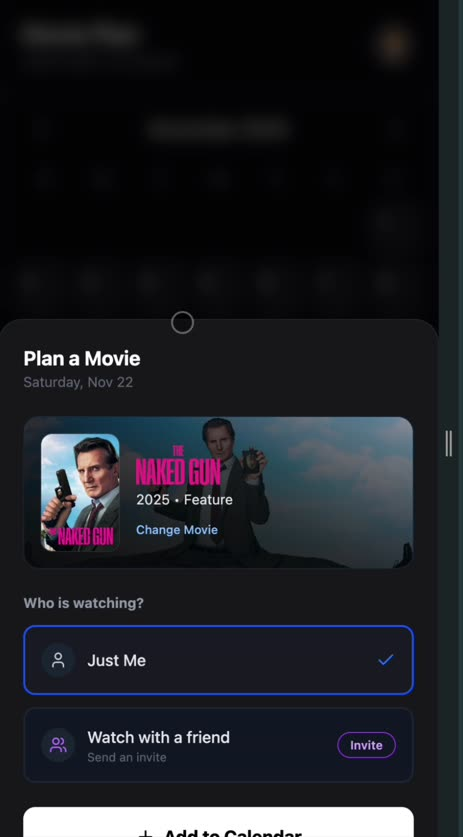

SELECTS
The loop does not close.
A real emotion is adjacent. Nothing is designed against it, and there is no channel to reach the user at all.
4 login taps, 7 onboarding pages, then a calendar. Six competing choices on one 96px card.
Orbit is genuinely good and buried. The core action's reward is a 44px near-black square.
The exploration graph lives in and is destroyed on reload.
The mark
A grease-pencil ring — the circle an editor draws around a select. The name as a gesture.
One stroke, ~11% of diameter, drawn twice with a gap. Never on a plate, never in a box, always transparent — the opposite of the shipped PNG.
The shipped icon is dark-grey sprockets on pure black. On a home screen it reads as an empty rectangle.
Mark · progress arc · graph node · orbit path · avatar frame · focus ring. Oura's ring is both logo and progress; that is the economy to copy.
Ink, bone, one hit of grease
Warm black instead of Tailwind zinc. All remaining chroma comes from the poster on screen.
Purple is the universal “an LLM lives here” signal. It is currently on the onboarding selection state, every Orbit surface, and the chat. It goes, along with the icon and the button labelled .
Two families, strictly divided
No webfont is loaded today. Display carries the argument; mono carries every fact.
The mono split is the load-bearing decision. A one-liner set in mono reads as a lab result. The same sentence in a rounded sans with a sparkle reads as a chatbot. Same words, opposite product.
The first screen
Today it pitches data entry. The verdict has to be readable before the video arrives.
one city,
nobody wins.
You are three films into sodium-lit crime. This is the one they were all copying.
The first screen of a consumer app is the entire pitch. This one currently pitches data entry, on a product whose promise is speed — and it is empty by definition for a new user.
The hero never starts black. The backdrop paints at full opacity immediately; video arrives over it once buffered. If the video never loads, the screen is still complete.
HomeV2.tsx is already 70% of this — 1,153 lines, unrouted, and the better composition.
The reward moment
Highest-leverage fix in the product, and it is roughly one component.


“Circled. 41 this year.”
Cinema's most emotionally loaded asset — the poster — is fetched, rendered in the sheet, and then discarded at the exact moment the user has earned something.
No shared element, no haptic, no count, no sound. Framer Motion is a dependency and is not imported by a single file in the home path.
The day cell should carry the film's own colour. extractDominantColor already exists and is spent on one background wash.
Eight axes, not nineteen genres
The genericness complaint has one root cause: every AI surface reasons over TMDB's genre list.
You are asking a film scholar to find subsets of subsets of subsets while handing it . Meanwhile the app already generates the tags you want — and renders none of them.
| look | 35mm grain · sodium-and-cyan night · available light · video-tape texture |
| camera | locked-off · handheld verité · dolly-in on faces · unbroken take |
| tempo | slow burn · procedural · breathless · dread accumulating |
| weather | nobody wins · competence porn · guilt as engine · complicity |
| sound | needle-drop maximalism · silence as threat · synth pulse |
| world | rain-slick city night · institutional corridors · one apartment |
| shape | nonlinear · frame story · two-hander · ensemble braid |
| format | 1.37 Academy · 2.39 anamorphic · IMAX 70mm · 16mm blowup |
Every facet must be something a person could say out loud at a bar. If a term needs explaining, it is the wrong term.
the city is the antagonist and both men are good at their jobs
The edge is a sentence made of the overlap, not a number. Weight is TF-IDF over the facet corpus — rarer facets count more, so outranks . Strength drives line weight. 0.87 is never shown to anyone.
One graph. Orbit is the motion, DNA is the map.
Five features currently do this job. Node colour comes from the poster; a dot travels the edge.
| /dna/:id | breadcrumb + grid of headshots. No edges, no positions, no motion. |
| constellation | 2D trail on fixed offsets by swipe direction. Layout encodes which button you pressed. |
| profile | three AI sentences called “Taste DNA”. |
| similarity | computed, stored on every edge, never displayed. |
Orbit's four axes are currently labelled three mutually contradictory ways — the engine says UP is cinematography, the onboarding overlay says UP is “Auteur”, the drag hint agrees with neither.
A user cannot form a mental model of a space whose axes change name each time they are mentioned.
Monthly is a poster. Annual is the film.
The one artifact that is identical on a phone, a wall, and the landing page.
November
in the rain.
Wrapped works on three properties: annual scarcity, it is about identity rather than data, and it is engineered to be screenshotted.
A monthly video breaks two of them. Scarcity dies at twelve times a year, and a cinephile logging eight to twenty films a month does not have enough data to carry a narrative arc. You would be shipping the most expensive artifact in the product on the schedule where it is least earned.
A still poster is cheap, instant, offline, printable, and poster-shaped — so it fills a phone screen when posted instead of being a cropped screenshot of a UI. Every share is a brand impression.
It is also two-ink by construction, which means it screen-prints. Bone on ink, one hit of grease: a $2 poster and a $0.40 sticker. The cheapest brand distribution a film app will ever have.
Motion
The jank is not bad easing. It is that elements teleport.
| Token | Value | Use |
|---|---|---|
| swift | 140ms · .2,0,.2,1 | taps, chips |
| travel | spring 420/34 | shared-element morph |
| settle | spring 260/28 | sheets, screen entry |
| drift | 8s linear ∞ | hero, graph idle |
| arc | 620ms · .65,0,.35,1 | dot along an edge |
The one rule: the poster is the transition. Every poster gets and physically travels — grid cell → hero → day cell → graph node → one-sheet. Nothing cuts.
| Surface | Today |
|---|---|
| Onboarding 0→6 | if (page === N) return |
| Login steps | conditional render |
| Month change | grid swaps |
| Log a film | nothing at all |
| Synopsis expand | text swap, layout jumps |
| DNA node change | hard grid swap |
| Every route change | no shared element anywhere |
Orbit is the exception and proves the team can do this — real springs, a shatter transition, haptics wired per gesture. That bar exists in exactly one subsystem. Haptics fire only there too.
One centred spinner per screen is the strongest “generic web app” signal in the product. Replace all of them with poster-coloured skeletons.
Voice
Someone who has seen everything and does not need you to know that.
| Surface | Now | Proposed |
|---|---|---|
| splash | Your Personal Cinema Journal | Selects — and nothing else |
| onboarding | Your cinema. Understood. / A few questions to get started. | Three films you'd rewatch tonight. |
| movie CTA | Ask AI | What does the red chair mean? |
| similar | Similar Films | Because of the night |
| import done | Imported ✓ | 800 films. Here's what they say about you. |
| logged | Movie Logged! | Circled. 41 this year. |
| empty list | No movies yet | Nothing queued. That's a choice. |
| waitlist | Reach out to the team (no link, no form) | Not open yet. Leave an email and one line about the last film that wrecked you. |
| pattern | Pattern Detected • 4 films explored | You keep choosing men who lose. |
| rec label | NEXT WATCH | Tonight |
Never the words AI, powered by, generate, curated, vibes, personalized, magic, journey. Never explain the mechanism — the user does not want to know it read their Letterboxd, they want to be understood. Buttons are verbs. Specific nouns beat adjectives: sodium-lit over atmospheric, nobody wins over gritty. One dry joke per screen, zero exclamation marks.
The pattern prompt already has the right voice — “Ah, the ‘morally bankrupt men doing crimes with style’ marathon.” That register exists in the prompts and nowhere in the UI chrome. Make the chrome match the prompts, not the reverse.
AUDIT.md — 38 findings with file:line · DIRECTION.md — the system in full · QUESTIONS.md — 27 questions, 7 blocking